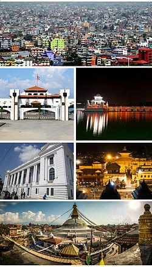
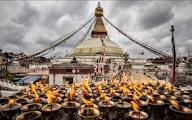

|  | Nepali pronunciation: [k???m???u]) is the capital city of the Federal Democratic Republic of Nepal, the largest Himalayan state in Asia. It is the largest metropolis in Nepal, with a population of 1.4 million in the city proper, and 5 million in its urban agglomeration across the Kathmandu Valley, which includes the towns of Lalitpur, Kirtipur, Madhyapur Thimi and Bhaktapur. Kathmandu is also the largest metropolis in the Himalayan hill region. |
| The city stands at an elevation of approximately 1,400 metres (4,600 feet) above sea level in the bowl-shaped Kathmandu Valley of central Nepal. The valley is historically termed as "Nepal Proper" and has been the home of Newar culture, a cosmopolitan urban civilization in the Himalayan foothills. | |
|  |